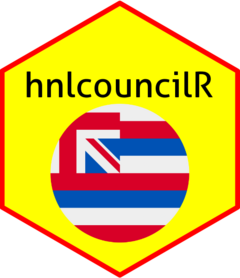

Create Network Graph of Cointroductions of Honolulu City Council Measures
cointro_network_graph.RdCreate Network Graph of Cointroductions of Honolulu City Council Measures
Details
This function creates a network plot using igraph that visualizes how often Honolulu City Council members introduce measures together. Each line in the graph indicates one measure that the members introduced together. Honolulu City Council measures can only be introduced by a max of two members, though many measures only have one introducer. Measures that were only introduced by one member are not shown in the graph.
Examples
measures_df <- get_council_measures(start_measure = 2796, end_measure = 2797)
cointro_network_graph(measures_df, type = "all")